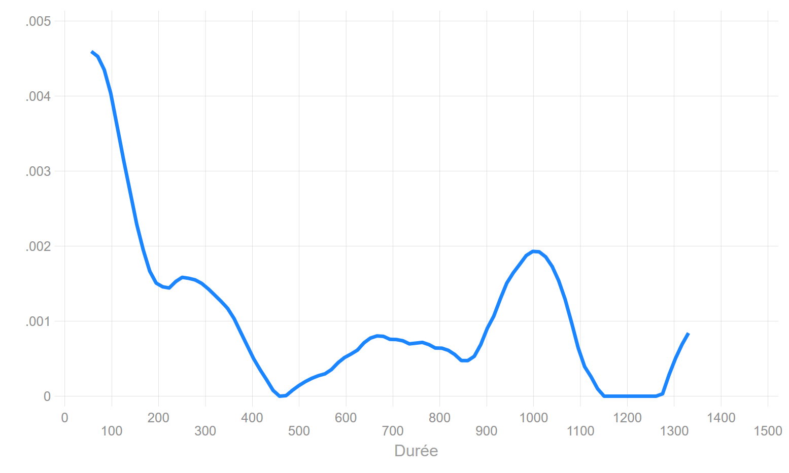

Beg. Std.
Interval Total Deaths Lost Survival Error [95% Conf. Int.]
-------------------------------------------------------------------------------
0 10 103 13 0 0.8738 0.0327 0.7926 0.9247
10 20 90 6 1 0.8152 0.0383 0.7257 0.8779
20 30 83 3 0 0.7857 0.0405 0.6931 0.8533
30 40 80 6 2 0.7261 0.0441 0.6284 0.8020
40 50 72 4 0 0.6857 0.0461 0.5857 0.7664
50 60 68 4 0 0.6454 0.0476 0.5439 0.7299
60 70 64 5 0 0.5950 0.0489 0.4926 0.6834
70 80 59 4 0 0.5546 0.0496 0.4523 0.6454
80 90 55 3 0 0.5244 0.0499 0.4225 0.6165
90 100 52 2 0 0.5042 0.0499 0.4029 0.5971
100 110 50 2 1 0.4838 0.0500 0.3831 0.5773
110 120 47 1 0 0.4735 0.0499 0.3732 0.5673
130 140 46 0 1 0.4735 0.0499 0.3732 0.5673
140 150 45 1 0 0.4630 0.0499 0.3631 0.5570
150 160 44 1 0 0.4525 0.0499 0.3530 0.5467
160 170 43 1 0 0.4420 0.0498 0.3429 0.5364
180 190 42 2 1 0.4207 0.0496 0.3227 0.5154
200 210 39 1 0 0.4099 0.0495 0.3125 0.5047
210 220 38 1 0 0.3991 0.0494 0.3024 0.4939
260 270 37 1 1 0.3882 0.0492 0.2921 0.4830
280 290 35 2 0 0.3660 0.0489 0.2714 0.4608
300 310 33 1 0 0.3549 0.0486 0.2612 0.4496
330 340 32 1 0 0.3438 0.0483 0.2510 0.4383
340 350 31 2 1 0.3213 0.0477 0.2305 0.4153
370 380 28 0 1 0.3213 0.0477 0.2305 0.4153
390 400 27 0 1 0.3213 0.0477 0.2305 0.4153
420 430 26 0 1 0.3213 0.0477 0.2305 0.4153
440 450 25 0 1 0.3213 0.0477 0.2305 0.4153
480 490 24 0 1 0.3213 0.0477 0.2305 0.4153
510 520 23 0 1 0.3213 0.0477 0.2305 0.4153
540 550 22 0 1 0.3213 0.0477 0.2305 0.4153
580 590 21 1 0 0.3060 0.0478 0.2156 0.4008
590 600 20 0 1 0.3060 0.0478 0.2156 0.4008
620 630 19 0 1 0.3060 0.0478 0.2156 0.4008
670 680 18 1 1 0.2885 0.0482 0.1983 0.3847
730 740 16 1 0 0.2705 0.0484 0.1808 0.3680
840 850 15 0 1 0.2705 0.0484 0.1808 0.3680
850 860 14 1 0 0.2511 0.0487 0.1622 0.3501
910 920 13 0 1 0.2511 0.0487 0.1622 0.3501
940 950 12 0 1 0.2511 0.0487 0.1622 0.3501
970 980 11 1 0 0.2283 0.0493 0.1398 0.3299
990 1000 10 1 0 0.2055 0.0494 0.1187 0.3088
1030 1040 9 1 0 0.1826 0.0489 0.0988 0.2869
1140 1150 8 0 1 0.1826 0.0489 0.0988 0.2869
1320 1330 7 0 1 0.1826 0.0489 0.0988 0.2869
1380 1390 6 1 0 0.1522 0.0493 0.0715 0.2609
1400 1410 5 0 2 0.1522 0.0493 0.0715 0.2609
1570 1580 3 0 1 0.1522 0.0493 0.0715 0.2609
1580 1590 2 0 1 0.1522 0.0493 0.0715 0.2609
1790 1800 1 0 1 0.1522 0.0493 0.0715 0.2609
-------------------------------------------------------------------------------
Durée pour differents quantiles de la fonction de survie
Définition des bornes Sas-lifetest
S(t)=0.90: t= 7.923
S(t)=0.75: t= 35.989
S(t)=0.50: t= 102.068
S(t)=0.25: t= 913.968
S(t)=0.10: t= .Les fonctions de survie
Les méthodes non paramétriques portent généralement sur l’analyse des fonctions de survie (\(S(t\))) ou sur celle des fonctions de répartitions (\(F(t)\)), plus rarement sur les mesures d’incidence données par le risque cumulé. Deux méthodes d’estimations sont proposées : la méthode dite actuarielle et la méthode dite de Kaplan & Meier. Ces deux approches sont adaptées à des mesures différentes de la durée : plutôt discrèt/groupées pour la technique actuarielle et plutôt continue pour Kaplan-Meier (KM). Cela induit un traitement différent de la censure dans l’estimation. La seconde est de très très loin la plus diffusée, surement en raison des tests de comparaison qu’elle propose.
Les fonctions de survie/séjour
Les variables d’analyse
On a un échantillon aléatoire de \(n\) individus avec:
- Des indicateurs de fin d’épisode \(e_1,e_2,....,e_k\) avec \(e_i=0\) si censure à droite et \(e_i=1\) si évènement observé pendant la période d’observation.
- Des durées d’exposition au risque \(t_1,t_2,....,t_k\) jusqu’à l’évènement ou la censure.
- En théorie, il ne peut pas y avoir d’évènement en \(t=0\).
Calcul de la fonction de survie
Rappel: La fonction de survie donne la probabilité que l’évènement survienne après \(t_i\), soit \(S(t_i)=P(T>t_i)\).
Pour survivre en \(t_i\), il faut avoir survécu en \(t_{i-1}\), \(t_{i-2}\), …., \(t_{1}\).
La fonction de survie rapporte donc des probabilités conditionnelles: survivre en \(t_i\) conditionnellement au fait d’y avoir survécu avant. Il s’agit donc d’un produit de probabilités:
Soit \(d_i=\sum e_i\) le nombre d’évènements observé en \(t_i\) et \(r_i\) la population encore soumise au risque en \(i\). On peut mesurer l’intensité de l’évènement en \(t_i\) en calculant le quotient \(q(t_i)=\frac{d_i}{r_i}\). Si le temps est strictement continu on devrait toujours avoir \(q(t_i)=\frac{1}{r_i}\).
\(S(t_i) = (1 - \frac{d_i}{r_i})\times{S(t_{i-1})} = S(t_i) = (1 - q(t_i))\times{S(t_{i-1})}\). En remplaçant \(S(t_{i-1})\) par sa valeur: \(S(t_i) = (1 - \frac{d_i}{r_i})\times(1 - \frac{d_{i-1}}{r_{i-1}})\times{S(t_{i-2})}\).
En remplaçant toutes les expressions de la survie jusqu’en \(t_0\) (\(S(0)=1\)):
\[S(t_i)=\displaystyle \prod_{t_i\leq{k}} (1-q(t_i))\]
Note
Application pour la suite de la formation
On va analyser le risque de décéder (la survie) de personnes souffrant d’une insuffisance cardiaque. Le début de l’exposition est leur inscription dans un registre d’attente pour une greffe du coeur.
Les covariables sont dans un premier temps toutes fixes: l’année (year) et l’âge (age) à l’entrée dans le registre, et le fait d’avoir été opéré pour un pontage aorto-coronarien avant l’inscription (surgery). Le début de l’exposition au risque est l’entrée dans le registre, la durée est mesurée en jour (stime). La variable évènement/censure est le décès (died).
L’introduction d’une dimension dynamique, la greffe, est donnée par les informations contenues dans les variables transplant et wait.
[Mettre liens git avec la base en .csv, .dta, .sas7bdat]
| id | year | age | died | stime | surgery | transplant | wait | mois | compet |
|---|---|---|---|---|---|---|---|---|---|
| 15 | 68 | 53 | 1 | 1 | 0 | 0 | 0 | 1 | 1 |
| 43 | 70 | 43 | 1 | 2 | 0 | 0 | 0 | 1 | 1 |
| 61 | 71 | 52 | 1 | 2 | 0 | 0 | 0 | 1 | 1 |
| 75 | 72 | 52 | 1 | 2 | 0 | 0 | 0 | 1 | 1 |
| 102 | 74 | 40 | 0 | 11 | 0 | 0 | 0 | 1 | 0 |
| 74 | 72 | 29 | 1 | 17 | 0 | 1 | 5 | 1 | 2 |
La méthode actuarielle
- Estimation sur des intervalles définies par l’utilisateur.
- Méthode dite «continue», estimation en milieu d’intevalle.
- Méthode apropriée lorsque la durée est mesurée de manière discrète/groupée.
- Méthode, hélas, quasiment abandonnée dans les sciences sociales même si les durées sont plus rarement mesurées de manière exacte. L’absence de test de comparaison des fonctions de survie n’y est pas étranger.
Estimation
Echelle temporelle
La durée est divisée en \(J\) intervalles, en choisissant \(J\) points: \(t_0<t_1<...<t_J\) avec \(t_{J+1}=\infty\).
Calcul du Risk set
- A \(t_{min}=0\), \(n_0=n\) individus soumis au risque: \(r_0=n_0\).
- Le nombre d’exposé.e.s au risque sur un intervalle est calculé en soustrayant la moitié des cas censurés sur la longueur de l’intervalle: \(r_i=n_i- 0.5\times{c_i}\), avec \(n_i\) le nombre de personnes soumises au risque au début de l’intervalle et \(c_i\) le nombre d’observations censurées sur la longueur de l’intervalle. On suppose donc que les observations censurées \(c_i\) sont sorties de l’observation uniformément sur l’intervalle. Les cas censurés le sont en moyenne au millieu de l’intervalle.
Calcul de \(S(t_i)\)
On applique la méthode de la section précédente avec:
\[q(t_i)=\frac{d_i}{n_i - 0.5\times c_i}\]
Calcul de la durée médiane (ou autre quantiles)
Rappel: en raison de la présence de censures à droite, le dernier intervalle étant ouvert jusqu’à la dernière sortie d’observation, il n’est pas conseillé de calculer des durées moyennes. On préfère utiliser la médiane ou tout autre quantile lorsqu’ils sont calculables.
Définition: il s’agit de la durée telle que \(S(t_i)=0.5\).
Calcul: Comme on applique une méthode continue et monotone à l’intérieur d’intervalles, on ne peut pas calculer directement un point de coupure qui correspond à 50% de survivants. On doit donc trouver ce point par interpolation linéaire dans l’intervalle \([t_i;t_{i+1}[\) avec \(S(t_{i+1})\leq0.5\) et \(S(t_{i})>0.5\).
R-Stata-Sas-Python
Les fonctions de survie avec la méthode dite actuarielle sont estimables avec le package discSurv. Avec le temps, il s’est étoffé, on peut maintenant paramatrer des intervalles, mais les quantiles de la durées ne sont toujours pas estimables, ce qui est fort dommage.
Dans les résulats qui suivent, ces quantiles ont été estimés avec Stata en retenant la définition des bornes de Sas.
Commande ltable, avec en option la paramétrisation des intervalles de durées. Voir la commande externe qlt (MT) qui calcule les durées médianes (+ autres quartiles) et qui recalcule la fonction de séjour avec une définition des intervalles de durées identique à celle de SAS.
Sous une proc lifetest avec en option method=lifetable. On peut paramétrer les intervalles d’estimation avec l’option width.
A l’heure actuelle, aucune fonction à ma connaissance
Stata: commande
ltable. Voir la commande externeqlt(MT) qui calcule les durées médianes (+ autres quartiles) et qui cale la définition des intervalles avec celle de SAS.R: une fonction programmée par un utilisateur (package
discSurv=> fonctionlifeTable), mais pas convaincante car pas d’estimation sur les quantiles, et estimation avec des intervalles toujours fixés à \(dt=1\). D’un intérêt très limité, voire nul.
Python: à l’heure actuelle, aucune fonction à ma connaissance.
Application

102 jours après leur inscription dans le registre d’attente pour une greffe, 50% des malades sont toujours en vie. Au bout de 914 jours, 75% des personnes sont décédées.
La méthode de Kaplan-Meier
- L’approche qui exploite toute l’information disponible est celle dite de Kaplan-Meier (KM).
- Il y a autant d’intervalles que de durées où l’on observe au moins un évènement.
- Au lieu d’utiliser des intervalles prédéterminés, l’estimateur KM va définir un intervalle entre chaque évènement enregistré.
- La fonction de survie estimée par la méthode KM est une fonction en escalier (stairstep), d’où une méthode dite “discrète”.
- Pour chaque intervalle, on compte le nombe d’évènements et le nombre de censures.
- Méthode adaptée pour une mesure de la durée de type continue.
Estimation
Définition du Risk Set (\(r_i\))
S’il y a à la fois des évènements et des censures à une durée \(t_i\), les observations censurées sont considérées comme exposées au risque à ce moment, comme si elles étaient censurées très rapidement après. C’est la principale caractéristique de cette méthode, appelé également l’estimateur « product-limit »
\[r_i=r_{i-1}-d_{i-1}-c_{i-1}\]
Calcul de \(q_i\)
On applique la méthode de la section précédente avec:
\[q_i=\frac{d_i}{r_{i-1}-d_{i-1}-c_{i-1}}\] Remarque: la variance de l’estimateur est obtenu par la méthode dite de “Greenwood”“. Il n’y a pas d’intérêt particulier pour ce cours de la décrire.
Récupération de la médiane
Il n’y a pas de méthode pour calculer directement la durée médiane (ou tout autre quantile).
On va prendre la valeur de la durée qui se situe juste “en dessous” de 50% de survivant.e.s. Elle est donc définie tel que \(S(t)\leq0.5\). donc pas de formule savante pour obtenir ce résultat, c’est une convention. Attention, il n’est pas impossible que le % de survivant.e.s soit bien en deçà de 50% pour l’obtention cette durée médiane.
R-Stata-Sas-Python
Les estimateurs sont obtenus avec fonction survfit de la librairie survival. On peut obtenir des rendus graphiques supérieurs avec la librairie survminer (fonction ggsurvplot)
Après avoir appelé les variables de durée et de censure en mode survival avec stset), le tableau des estimateurs est obtenu la commande sts list et le graphique avec sts graph.
L’estimation de Kaplan-Meier est affichée par défaut par la proc lifetest.
Warning : le tableau affiché par SAS est particulièrement pénible à lire voire illisible, en particulier lorsque le nombre de censures est élevé, une ligne étant ajoutée pour chaque observation censurée. Je conseille de ne pas afficher cette partie de l’output (se reporter à la section SAS du chapitre programmation). On récupère pour le reste de l’output les valeurs de la durée pour S(t) =(.75,.5,.25) ainsi que le graphique, ce qui est suffisant.
Les resultats sont donnés dans la librairie lifeline par des fonctions dont le nom est interminable. Je conseille plutôt l’utilisation de la librairie statmodels (se reporter à la section dédiée à Python).
Application
On reprend l’exemple précédent.
Time Total Fail Lost Function Error [95% Conf. Int.]
-------------------------------------------------------------------------------
1 103 1 0 0.9903 0.0097 0.9331 0.9986
2 102 3 0 0.9612 0.0190 0.8998 0.9852
3 99 3 0 0.9320 0.0248 0.8627 0.9670
5 96 2 0 0.9126 0.0278 0.8388 0.9535
6 94 2 0 0.8932 0.0304 0.8155 0.9394
8 92 1 0 0.8835 0.0316 0.8040 0.9321
9 91 1 0 0.8738 0.0327 0.7926 0.9247
11 90 0 1 0.8738 0.0327 0.7926 0.9247
12 89 1 0 0.8640 0.0338 0.7811 0.9171
16 88 3 0 0.8345 0.0367 0.7474 0.8937
17 85 1 0 0.8247 0.0375 0.7363 0.8857
18 84 1 0 0.8149 0.0383 0.7253 0.8777
21 83 2 0 0.7952 0.0399 0.7034 0.8614
28 81 1 0 0.7854 0.0406 0.6926 0.8531
30 80 1 0 0.7756 0.0412 0.6819 0.8448
31 79 0 1 0.7756 0.0412 0.6819 0.8448
32 78 1 0 0.7657 0.0419 0.6710 0.8363
35 77 1 0 0.7557 0.0425 0.6603 0.8278
36 76 1 0 0.7458 0.0431 0.6495 0.8192
37 75 1 0 0.7358 0.0436 0.6388 0.8106
39 74 1 1 0.7259 0.0442 0.6282 0.8019
40 72 2 0 0.7057 0.0452 0.6068 0.7842
43 70 1 0 0.6956 0.0457 0.5961 0.7752
45 69 1 0 0.6856 0.0461 0.5855 0.7662
50 68 1 0 0.6755 0.0465 0.5750 0.7572
51 67 1 0 0.6654 0.0469 0.5645 0.7481
53 66 1 0 0.6553 0.0472 0.5541 0.7390
58 65 1 0 0.6452 0.0476 0.5437 0.7298
61 64 1 0 0.6352 0.0479 0.5333 0.7206
66 63 1 0 0.6251 0.0482 0.5230 0.7113
68 62 2 0 0.6049 0.0487 0.5026 0.6926
69 60 1 0 0.5948 0.0489 0.4924 0.6832
72 59 2 0 0.5747 0.0493 0.4722 0.6643
77 57 1 0 0.5646 0.0494 0.4621 0.6548
78 56 1 0 0.5545 0.0496 0.4521 0.6453
80 55 1 0 0.5444 0.0497 0.4422 0.6357
81 54 1 0 0.5343 0.0498 0.4323 0.6261
85 53 1 0 0.5243 0.0499 0.4224 0.6164
90 52 1 0 0.5142 0.0499 0.4125 0.6067
96 51 1 0 0.5041 0.0499 0.4027 0.5969
100 50 1 0 0.4940 0.0499 0.3930 0.5872
102 49 1 0 0.4839 0.0499 0.3833 0.5773
109 48 0 1 0.4839 0.0499 0.3833 0.5773
110 47 1 0 0.4736 0.0499 0.3733 0.5673
131 46 0 1 0.4736 0.0499 0.3733 0.5673
149 45 1 0 0.4631 0.0499 0.3632 0.5571
153 44 1 0 0.4526 0.0499 0.3531 0.5468
165 43 1 0 0.4421 0.0498 0.3430 0.5364
180 42 0 1 0.4421 0.0498 0.3430 0.5364
186 41 1 0 0.4313 0.0497 0.3327 0.5258
188 40 1 0 0.4205 0.0497 0.3225 0.5152
207 39 1 0 0.4097 0.0495 0.3123 0.5045
219 38 1 0 0.3989 0.0494 0.3022 0.4938
263 37 1 0 0.3881 0.0492 0.2921 0.4830
265 36 0 1 0.3881 0.0492 0.2921 0.4830
285 35 2 0 0.3660 0.0488 0.2714 0.4608
308 33 1 0 0.3549 0.0486 0.2612 0.4496
334 32 1 0 0.3438 0.0483 0.2510 0.4383
340 31 1 1 0.3327 0.0480 0.2409 0.4270
342 29 1 0 0.3212 0.0477 0.2305 0.4153
370 28 0 1 0.3212 0.0477 0.2305 0.4153
397 27 0 1 0.3212 0.0477 0.2305 0.4153
427 26 0 1 0.3212 0.0477 0.2305 0.4153
445 25 0 1 0.3212 0.0477 0.2305 0.4153
482 24 0 1 0.3212 0.0477 0.2305 0.4153
515 23 0 1 0.3212 0.0477 0.2305 0.4153
545 22 0 1 0.3212 0.0477 0.2305 0.4153
583 21 1 0 0.3059 0.0478 0.2156 0.4008
596 20 0 1 0.3059 0.0478 0.2156 0.4008
620 19 0 1 0.3059 0.0478 0.2156 0.4008
670 18 0 1 0.3059 0.0478 0.2156 0.4008
675 17 1 0 0.2879 0.0483 0.1976 0.3844
733 16 1 0 0.2699 0.0485 0.1802 0.3676
841 15 0 1 0.2699 0.0485 0.1802 0.3676
852 14 1 0 0.2507 0.0487 0.1616 0.3497
915 13 0 1 0.2507 0.0487 0.1616 0.3497
941 12 0 1 0.2507 0.0487 0.1616 0.3497
979 11 1 0 0.2279 0.0493 0.1394 0.3295
995 10 1 0 0.2051 0.0494 0.1183 0.3085
1032 9 1 0 0.1823 0.0489 0.0985 0.2865
1141 8 0 1 0.1823 0.0489 0.0985 0.2865
1321 7 0 1 0.1823 0.0489 0.0985 0.2865
1386 6 1 0 0.1519 0.0493 0.0713 0.2606
1400 5 0 1 0.1519 0.0493 0.0713 0.2606
1407 4 0 1 0.1519 0.0493 0.0713 0.2606
1571 3 0 1 0.1519 0.0493 0.0713 0.2606
1586 2 0 1 0.1519 0.0493 0.0713 0.2606
1799 1 0 1 0.1519 0.0493 0.0713 0.2606
-------------------------------------------------------------------------------Durée médiane: \(t=100\) (correspond à \(S(t)=0.4940\)).

Quantités associées
A partir de l’estimateur Kaplan-Meier..
Le risque cumulé: estimateur de Nelson AAlen
Il est simplément égal à: \[H(t)=\sum_{t_i\leq k}q(t_i)\]

Le risque instantané
Nécessite l’estimateur de Nelson-Aalen. Le risque est obtenu en lissant les différences - toujours positive - entre \(H(t)\) par la méthode dite du kernel. Elle permet d’obtenir une fonction continue avec la durée (paramétrables sur les largeurs des fenêtres de lissage). D’autres méthodes de lissage sont maintenant possibles, et de plus en plus utilisées, en particulier celles utilisant des splines.
